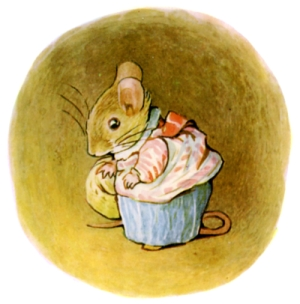
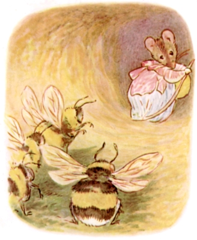
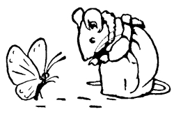
このささやかな ほんは ネリーのもの。
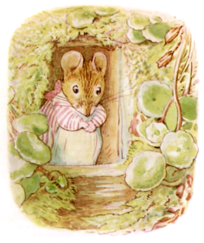
むかしむかし あるところに １びきの もりねずみが おりまして、 なまえを おねずみトマシーナおばさんと いいました。
すまいは いけがきの うらにある もりつちの なか。
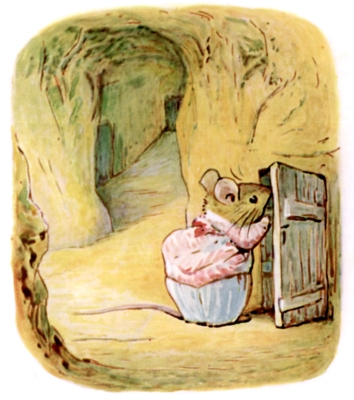
これが おもしろい おうちなんです！ いけがきの ねっこを めぐって あっち こっちへ つちの めいろが できあがっていて、 そのさきに ものおきやら きのみや たねを たくわえておく くらが それぞれ あったりしまして。
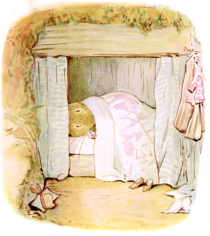
だいどころや いまも ありますし、 それから しょっきべやや たべものおきばまで。
あと おねずみおばさんの おやすみする へやも ありまして、 そこでは ねむる ベッドが ちいさな はこに なっているんです！
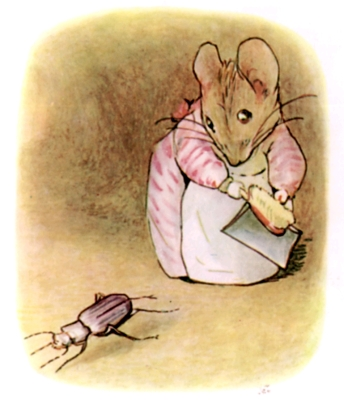
おねずみおばさんは どを こえた きれいずきの ねずみさんで、 いつだって やわらかな つちの ゆかを はきそうじ ちりはらい。
たまに まいごに なった はむしに でくわしますと、
「しっ！ しっ！ ばっちい あしあしさんめ！」と おねずみおばさんは もっている ちりとりを うちならすのです。
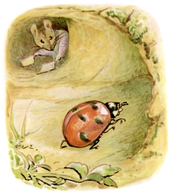
また あるひは ちいさな おばあさんが みずたまもようの あかい ケープを はおって うろちょろしておりました。
「おたくが いま もえてるんですって、 ななほしおばさま！ おこさんのいる おうちへ とんで おかえりになって！」
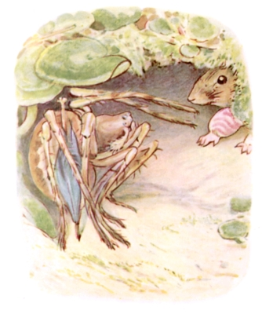
べつの ひには まんまるした おおぐもが あまやどりに きておりまして。
「すいませんが、 ここは マフェットちゃんの おたくでは ない？」
「あっちへ おいき、 この あつかましい わるぐもめ！ わたしの すてきで きれいな おうちの あっちこっちに くものすの はしきれ のこしくさって！」
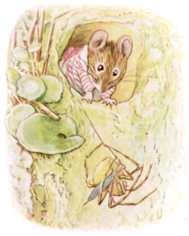
そこで くもを まるめて まどから ほうりだしたのでした。
くもは ほそながい いとを ちょいと たらして いけがきを おりていくしか ありません。
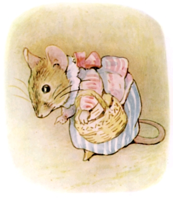
おねずみおばさんが はなれにある ものおきへ むかうところ。 ばんごはんに サクランボの さねと アザミの わたげを とりにいくのです。
ろうかを すすむ あいだ、 ずっと ゆかを くんくん じっと みつめていまして。
「はちみつの においが するわ。 そとの いけがきにある クリンザクラ？ どうも きたない ちいさな あしあとが あるみたい。」
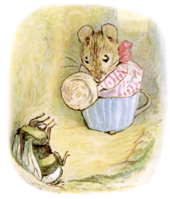
かどを まがって ばったり であったのが どじじずバビティ ――「じーず、 ぶん、 ぶぅーん。」と まるはなばちの おんなのこが しゃべります。
おねずみおばさんは きッと あいてを にらみつけました。 ほうきが あれば いいのに、 と。
「こんにちは、 どじじずバビティ。 みつろうを うってくださるなら、 ほんとに ありがたいんだけど。 でも いま ここで なにしてるの？ どうして いつも まどから はいってきて、 じーず、 ぶん、 ぶぅーん、 なんて いうわけ？」と いいながら おねずみおばさん だんだん はらが たってきまして。
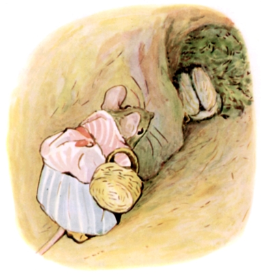
「じーず、 うん、 うぅーん！」と どじじずバビティから かえってきたのは すねた なきごえ。 じりじり ろうかを うごくと、 ぱっと そこの ものおきへと きえました。 どんぐりようの おへやです。
おねずみおばさんは クリスマスまえに どんぐりを みんな たべてしまいましたから、 ものおきは からっぽのはずなのに。
ところが かぴかぴの こけで なかが いっぱい、 ぐっちゃぐちゃで。
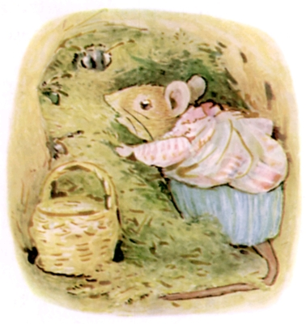
おねずみおばさんは こけを ひっぱがしはじめます。 ほかにも ３，４ひきの はちが あたまを だしていて ぶんぶん なきさけんでいました。
「まったく、 わたしは ひとに まがしなんて してないってのに。 かってに いすわってからに！」と おねずみおばさん。「いまから でてもらうからね ――」「ぶん！ ぶん！ ぶぅーん！」――「だれか ひとでが いるわね。」「ぶん、 うん、 うぅーん！」
――「ジャクソンさんは だめね。 ぜったいに あしを ふかないんだもの！」
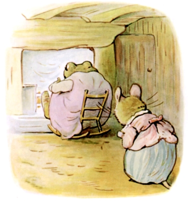
おねずみおばさんは ひとまず ばんごはんの あとまで はちたちを ほうっておくことにしました。
いまへと ひきかえすと のぶとい こえで だれか せきばらいを しておりまして。 なんと すわっていたのは そのジャクソンさん ごほんにん！ ちいさな ゆりいすを はみださんばかりに すわりながら、 おやゆびを いじいじ、 だんろの さくに あしを かけて、 にたにたしているのです。
ごほんにんの すまいは いけがきの したにある みぞで、 そこは ひどく きたならしい じめじめした どぶなのでした。
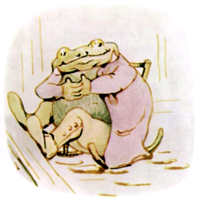
「こんにちは、 ジャクソンさん、 あらまあ ずぶぬれで！」
「あんがと、 あんがと、 あんがと、 おねずみおばさん！ ちーと すわって かわかすさかい。」と ジャクソンさん。
こしかけたまま にたにた、 みずが うわぎの すそから したたりおちます。 おねずみおばさんは モップを もって あたりを ぐるぐる。
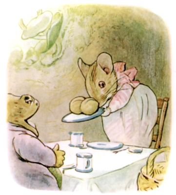
あまりに ながながと いるので、 とりあえず ばんごはん たべていきますかと きくはめに なりまして。
まず だしたのが サクランボの さね。「あんがと、 あんがと、 おねずみおばさん！ けど、 はが のうて、 はが のうて、 はが のうての！」と ジャクソンさん。
べつに いいのに、 くちを ひろびろと あけまして、 なるほど はは １ぽんも ありません。
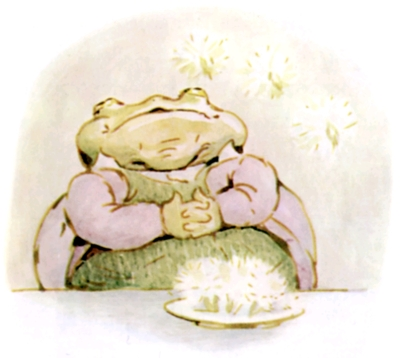
つぎに だしたのが アザミの わたげ ――「ちゃっ、 ひゃっ、 ひゃっ！ ぷーっ、 ぷーっ、 ぷぅ！」と ジャクソンさんは わたげを へやの あちこちに ふきとばしてしまいまして。
「あんがと、 あんがと、 あんがと、 おねずみおばさん！ けど、 わいが ほんとに ―― ほんとに ―― ほしいんは ―― ほんの ひともりの はちみつなんや！」

「はあ すいません、 うちには ないと おもうんですけど。」と おねずみおばさん。
「ちゃ、 ひゃ、 ひゃ、 おねずみおばさん！」と にたにたする ジャクソンさん。「においが しよる。 ちゅーわけで わいは さそわれてきてん。」
ジャクソンさんは おもい こしを あげるや、 とだなのなかを あさりだしまして。
おねずみおばさんは ふきんを てに、 うしろから いまの ゆかに ついた しめった おおきな あしあとを ふきとっていきます。
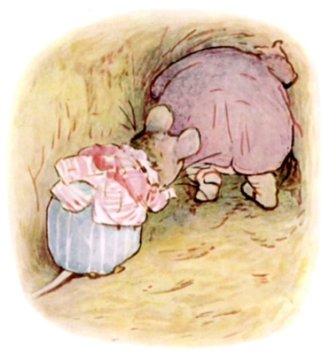
とだなのなかに はちみつが ないと なっとくすると、 こんどは ろうかの おくへと すすみだしまして。
「あの、 あの、 たちまち つっかえますよ、 ジャクソンさん！」
「ちゃ、 ひゃ、 ひゃ、 おねずみおばさん！」
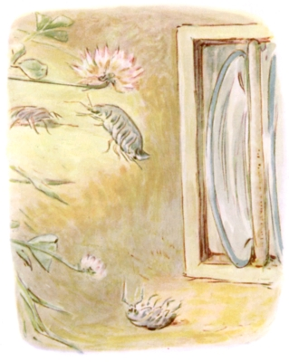
まず おしいったのは しょっきべやでした。
「ちゃ、 ひゃ、 ひゃあ？ はちみつ ない？ はちみつ ないなあ、 おねずみおばさん。」
いたのは、 おさらたての うらに かくれていた、 そろりそろり はっている むしが ３びきだけ。 そのうち ２ひきは にげきりましたが、 いちばん ちいさいのは ジャクソンさんに つかまってしましました。
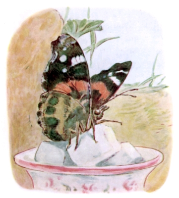
つぎに おしいったのは たべものおきば。 おちょうの おじょうさんが おさとうの あじみを していましたが、 まどから そとへ とびさります。
「ちゃ、 ひゃ、 ひゃ、 おねずみおばさん、 なんや おきゃくが ようけ おるなあ！」
「だれも まねいてません！」と おねずみトマシーナ。
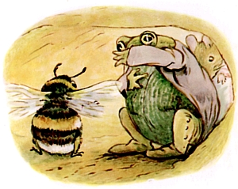
つちの ろうかを すすんでいると ――「ちゃ、 ひゃあ ――」「ぶん！ うん！ うん！」
かどを まがったところで バビティと ばったり、 ジャクソンさんは ぱくっと かみついて また ぺっと はきだして。
「まるはなばちは すっきゃない。 ぜんしんの けが こうて かとうて。」と くちを そでで ぬぐいます。
「うせろ、 きちゃねえ かえるじじい！」と どじじずバビティの なかきりごえ。
「もう、 きが おかしくなりそう！」と おねずみおばさんも おかんむり。

おばさんが きのみの くらに とじこもっているあいだ、 ジャクソンさんが はちのすを ひっぱがします。 はちに さされるのは わりと へいきそうでした。
こころを きめて おねずみさんが くらから でてみると ―― みんな どこかへ いってしまったようで。
でも そのちらかりぐあいが おそろしく ひどくって ――「こんな きたならしいの みたことない ―― はちみつの しみに、 こけ、 わたげ ―― きたない あしあとが おおきいの ちいさいの あちこちに ―― せっかくの すてきで きれいな わがやが！」
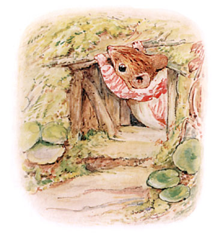
そこで こけと みつろうの のこりを かきあつめました。
それから そとへ でて、 えだを いくつか ひろってきて、 おもての いりぐちを はんぶん はめごろしてしまいます。
「ジャクソンさんの からだより ちいさくしてやる！」
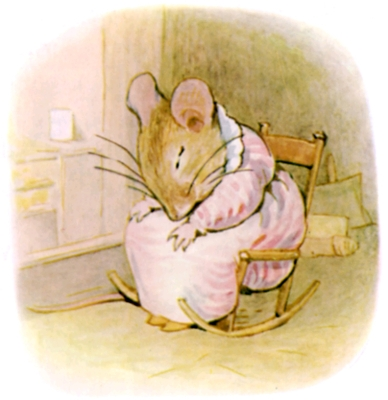
そして やわらか せっけんと ニットの ぬのと おろしたての あらいだわしを ものおきから とってきました。 ところが つかれきって もう なにも できません。 とりあえず いすで いねむりしてから、 ベッドへ いきます。
「また ちゃんと もとどおり かたづくかしら？」と ふあんげな おねずみおばさん。
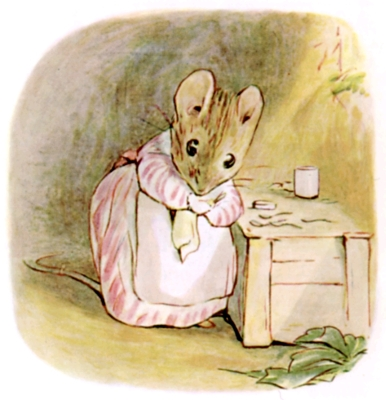
あくるあさ とっても はやくに おきると、 はるの おおそうじを はじめまして、 おわるまで ２しゅうかんも かかりました。
はきはき、 ごしごし、 ぱたぱた、 それから かぐを みつろうで こすったり、 ちっちゃな すずの スプーンを みがいたり。
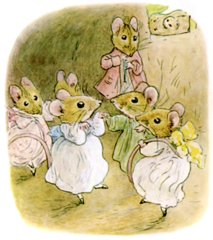
ぜんぶ みごと かたづいて きれいに なりますと、 こねずみさんを ５ひき よんで パーティを ひらきました。 ジャクソンさんは ぬきです。
しかし ごほんにんが パーティを かぎつけ、 もりつちのところまで やってきたのですが、 いりぐちが せまくて はいれません。
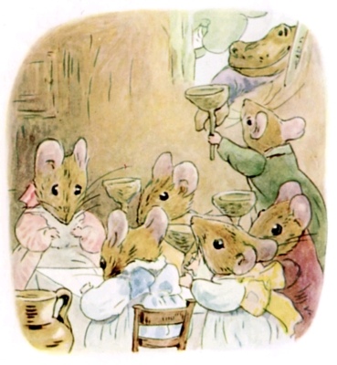
なので はちみつを どんぐりの おわんに いれて、 まどから てわたし。 ごほんにんも それで ぜんぜん かまわないみたいで。
ひなたに すわって こう いいました。「ちゃ、 ひゃ、 ひゃ！ おげんきで なによりや、 おねずみおばさん！」
（おしまい）